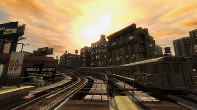
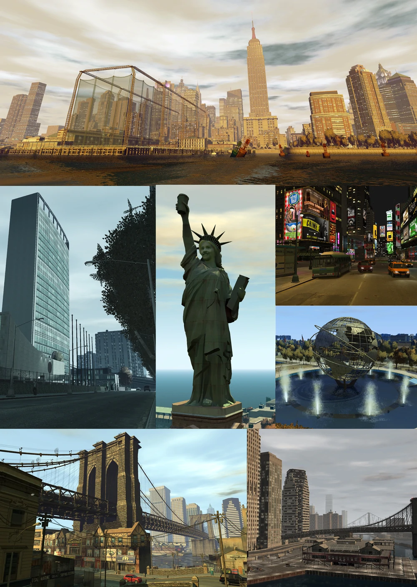

La ville de Liberty City
Liberty City est un endroit très différent du 21e siècle. La ligne d'horizon la plus célèbre du monde cache désormais une ville en proie à la peur et à la suspicion.
Dans l'ombre d'une économie incertaine et de la menace du terrorisme, des criminels organisés, des fonctionnaires corrompus et des forces de sécurité assiégées se disputent la suprématie dans une ville qui tente désespérément de devenir une banlieue.
C'est toujours un endroit où tout est possible, selon la quantité de vous-même que vous êtes prêt à sacrifier dans le processus.
Algonquin (Manhattan)
Un quartier commercial/d'affaires animé avec plein de gratte-ciels impressionnants et d'une composition variée de cultures. Ici se trouvent divers monuments célèbres, tels que Star Junction (Times Square), Middle Park (Central Park) et la tour de Rotterdam (Empire State Building).
Cette partie de Liberty City est la plus fréquentée, la plus peuplée et compte plus de bâtiments, de gratte-ciel et tout le reste. C'est le cœur de Liberty City.
Courtier (Brooklyn)
Une ex-ville distincte à part entière, elle conserve un caractère distinct du reste de la ville. Contient diverses poches de projets de logement.
Certaines zones se distinguent par un taux de criminalité élevé. Contient également un mélange de quartiers branchés de classe moyenne.
Dukes (Queens)
Un ancien quartier ethniquement diversifié et principalement résidentiel, c'est l'emplacement de l' aéroport international Francis et du stade de baseball qui abrite les Liberty City Swingers.
Dukes est principalement composé de quartiers résidentiels aisés et ethniquement diversifiés de la classe moyenne à supérieure qui utilisent l'architecture traditionnelle irlandaise, victorienne et Tudor.
Bohan (Bronx)
Le berceau de la culture du rap et du hip-hop. Aussi célèbre pour sa culture latino. Se compose en grande partie de vastes projets de logements délabrés et abrite le projet communautaire St.Mary's dirigé par Manny Escuela.
Connu pour ses taux de criminalité plus élevés, la violence des gangs et le trafic de drogue par rapport aux autres arrondissements. Bohan est la plus petite île.
Quartier d'Algonquin
Quartier de Bohan
Panorama de Grand Theft Auto IV
Carte de Grand Theft Auto IV

Informations
| Appelation | Grand Theft Auto IV |
| Nom | Liberty City |
| Capitale | ? |
| Habitants | +/- 2.5 millions |